← Índice de los 69 tutes de IDA
Tute 50 · Kernel de Windows: escenario
se conecta con: Fuera de alcance
INTRODUCCION AL REVERSING CON IDA PRO DESDE CERO PARTE 50.
TRABAJANDO CON EL KERNEL DE WINDOWS.
La idea de este tutorial es armar un poco el escenario para reversear y debuggear kernel, no creo que sea muy importante hacer una introducción muy extensa con lo que es el kernel, hay miles de tutoriales para ello, pero como idea principal copio estas definiciones.
QUE ES EL KERNEL?
El Kernel o Núcleo es un componente fundamental de cualquier sistema operativo. Es el encargado de que el software y el hardware de cualquier ordenador puedan trabajar juntos en un mismo sistema, para lo cual administra la memoria de los programas y procesos ejecutados, el tiempo de procesador que utilizan los programas, o se encarga de permitir el acceso y el correcto funcionamiento de periféricos y otros elementos físicos del equipo.
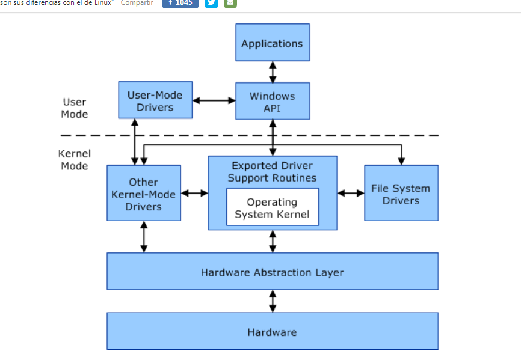
Vemos que en modo user están las aplicaciones, las apis de Windows, los drivers que se manejen en user, mientras que en modo kernel está el sistema operativo en si, el hardware, y los drivers que trabajan en modo kernel.
Cuando ejecutas una aplicación, esta accede al modo usuario, donde Windows crea un proceso específico para la aplicación. Cada aplicación tiene su dirección virtual privada, ninguna puede alterar los datos que pertenecen a otra y tampoco acceder al espacio virtual del propio sistema operativo. Es por lo tanto el modo que menos privilegios otorga, incluso el acceso al hardware está limitado, y para pedir los servicios del sistema las aplicaciones tienen que recurrir a la API de Windows.
El modo núcleo o kernel en cambio es ese en el que el código que se ejecuta en él tiene acceso directo a todo el hardware y toda la memoria del equipo. Aquí todo el código comparte un mismo espacio virtual, y puede incluso acceder a los espacios de dirección de todos los procesos del modo usuario. Esto es peligroso, ya que si un driver en el modo kernel toca lo que no debe podría afectar al funcionamiento de todo el sistema operativo.
Este modo núcleo está formado por servicios executive, como el controlador de caché, el gestor de comunicación, gestor de E/S, las llamadas de procedimientos locales, o los gestores de energía y memoria entre otros. Estos a su vez están formados por varios módulos que realizan tareas específicas, controladores de núcleo, un núcleo y una Capa de Abstracción del Hardware o HAL
Seguimos copiando un poco de definiciones ahora la de memoria virtual
La memoria virtual es una técnica utilizada por los sistemas operativos para acceder a una mayor cantidad de memoria de la físicamente disponible, recurriendo a soluciones de almacenamiento alternativas cuando se agota la memoria RAM instalada.
Los ordenadores utilizan la memoria RAM para almacenar los archivos y datos que necesitan tanto el sistema operativo como el software que estemos ejecutando; su elevado rendimiento garantiza un funcionamiento óptimo pero, tarde o temprano, siempre termina por llenarse. Es en ese momento cuando Windows necesita recurrir a la memoria virtual.
Para crear la memoria virtual Windows crea un archivo en la unidad de almacenamiento que tengamos asignada, sea un disco duro tradicional o un SSD; el sistema operativo genera un archivo llamado pagefile.sys (podéis encontrarlo oculto en el directorio raíz de vuestro sistema) donde va almacenando los datos que no caben en la memoria RAM pero que son necesarios para el funcionamiento del PC.
ESPACIO DE DIRECCIONES VIRTUALES.
Así, cuando trabajamos con aplicaciones muy exigentes (como los videojuegos, sin ir más lejos) o tenemos varias funcionando al mismo tiempo podéis notar como el sistema se ralentiza, especialmente si no vais sobrados de RAM. Es el ese momento cuando Windows está recurriendo al archivo de paginación y la memoria RAM se ha visto desbordada; se evitan los cuelgues y la inestabilidad, pero a cambio el rendimiento desciende considerablemente.
Llegados a este punto, es fácil concluir que cuanta más RAM tengamos en el equipo mucho mejor y notaremos más la diferencia cuanto más exigente sea el software que utilizamos. Aunque su precio ha bajado espectacularmente en los últimos años sigue siendo elevado, así que en la mayoría de escenarios es necesario recurrir a soluciones de memoria virtual.
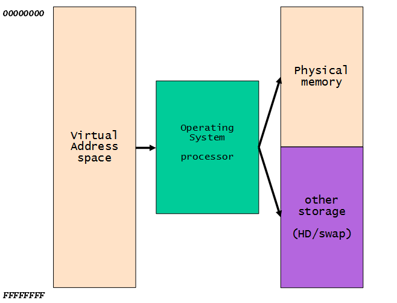
Allí vemos el virtual address space de cada proceso que va desde 0x0 hasta 0xFFFFFFFF y que el sistema operativo se vale para manejarlo de la ram y el swap como vimos antes.
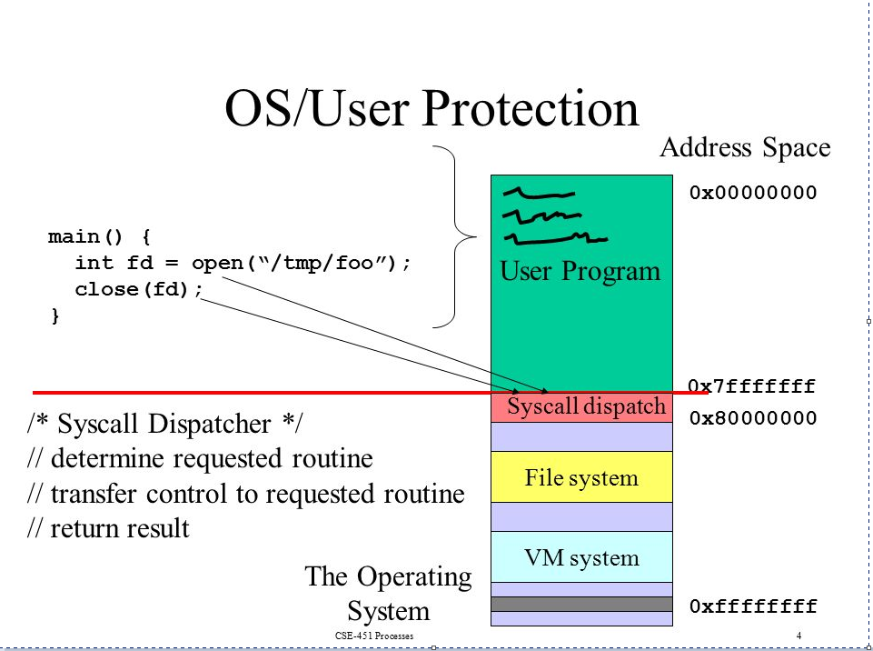
Y el virtual address space de 32 bits de cada proceso esta dividido , como vemos en la imagen desde 0x0 hasta 0x7fffffff la parte de espacio user donde se alojan los programas y de 0x7fffffff hasta 0xffffffff el espacio de kernel.
Bueno dejemos de robar de Internet y preparemos el escenario, obviamente no podemos debuggear kernel con un debugger tipo OLLYDBG o IDA en modo user, porque no puede acceder al igual que cualquier programa en modo user, a la parte del kernel, asi que menos que menos podría debuggearla.
VMWARE WORKSTATION
Tendremos que preparar un target donde debuggear kernel en mi caso yo uso VMWARE WORKSTATION y allí tengo mi target de WINDOWS 7 sp1 de 32 bits, sin ningún update para empezar.
Los que usen targets más actualizados podrán encontrarse que algunas cosas no les van a funcionar porque fueron parcheadas, pero como nosotros vamos a empezar desde el inicio es mejor ver lo más sencillo e ir avanzando de a poco.
CREANDO EL ENTORNO.
Una vez que armemos el entorno es probable que sigamos con VIDEO TUTES por lo cual es bueno preparar todo bien para continuar con ellos.
Mi maquina principal en este caso es un WINDOWS 7 Sp1 de 64 bits, con todos los parches hasta el día de hoy, aunque podrían utilizar otro sistema, quizás alguna que otra cosa no les funcione exactamente igual, pero se puede.
En mi maquina principal usare IDA 6.8 y antes que griten que ya salio el IDA 7 leakeado, el mismo tiene un bug, que al tratar de conectar para debuggear kernel de 32 bits crashea, como en mi trabajo me lo compran al ida oficial, a mí me mandaron un parche que soluciona ese bug pero obviamente no lo puedo distribuir, por ahí alguien se pone y se fija donde crashea y como se puede evitar eso y logra un parche valido para IDA 7, pero por ahora usaremos el 6.8 aquí.
Por supuesto también tienen que tener instalado WINDBG en la maquina principal y los símbolos configurados, y fijarse que en dicha carpeta de símbolos al usarlo se vayan bajando los mismos, en mi caso la carpeta se llama symbols.
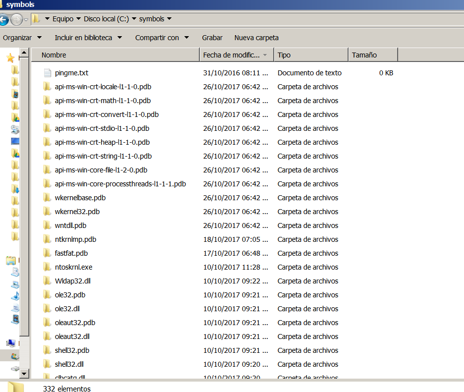
SIMBOLOS
Ya que en mis environment variables esta la variable _NT_SYMBOL_PATH
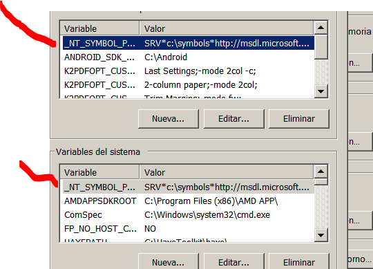
Cuyo valor es
SRV*c:\symbols*http://msdl.microsoft.com/download/symbols
Y hace que se pueda bajar los símbolos del server de microsoft, obvio hay que hacer que se pueda conectar a través de firewalls, proxy o lo que sea para que pueda acceder al repositorio de símbolos.
Lo siguiente es opcional yo tengo en mi maquina principal o sea en este con Windows 7, instalado el viejo WDK 7.1.0
https://www.microsoft.com/en-us/download/details.aspx?id=11800
Pero en la otra máquina que tengo con Windows 10 para tratar de hacer lo mismo con lo ultimo tengo instalado Visual Studio 2015 con el WDK 10 ya que por ahora el Visual Studio 2017 no permite usar WDK.
Tengo ambas opciones para hacerlo por ambos métodos compilando un driver de la forma antigua a mano en un editor de texto (a lo guapo jeje) y a la moderna y ver si puede funcionar y ver las diferencias.
Para probar los drivers hay que ir a
OSR DRIVER LOADER
http://www.osronline.com/article.cfm?article=157
Registrarse y bajarse el OSR DRIVER LOADER que nos ayudara a cargarlo fácil y probar nuestro driver.
Bajarse el DEBUG VIEW de microsoft
https://docs.microsoft.com/en-us/sysinternals/downloads/debugview.
Y una vez que tenemos todo eso bajamos el virtual KD
Virtual KD
http://virtualkd.sysprogs.org/download/
En este momento la ultima versión es la 3, si sale una mas nuevo, pues adelante.
Una vez autoextraido
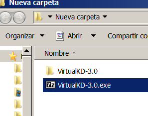
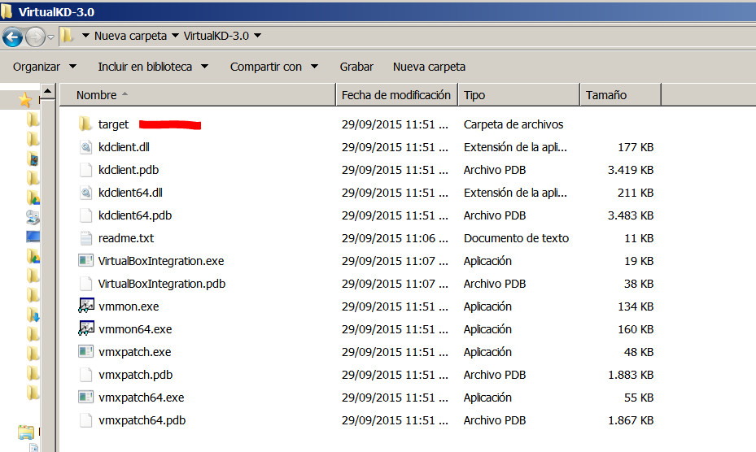
Vemos que hay una carpeta target que es la que se debe copiar en el target, el resto es para la maquina principal.
Una vez copiado la carpeta target en el mismo.
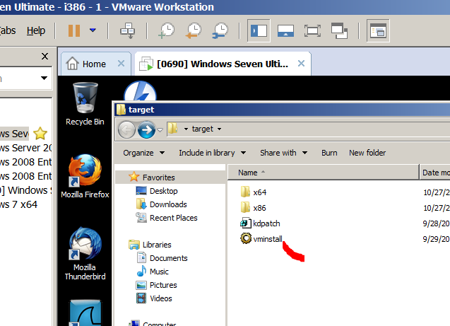
Ejecuto con permiso de administrador el vminstall.
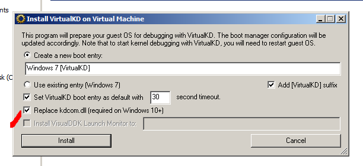
Esa tilde yo probé varias veces y si no la quitaba en Windows 7 no me funcionaba, igual pueden hacer un snapshot hacer la prueba y si no funciona, volver al snapshot y volver a intentar.
Antes de darle a install copien el nombre y peguenlo en un notepad en la maquina principal, ahora le saco la tilde esa y doy a install.
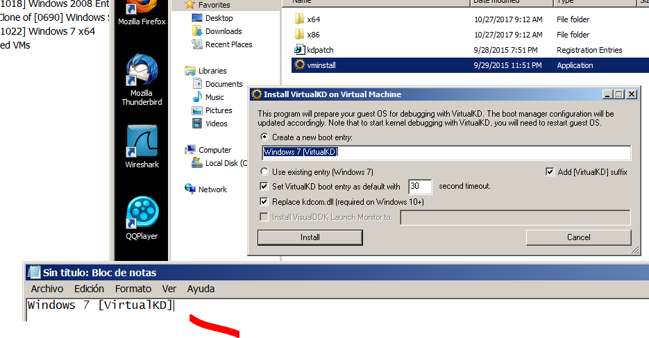
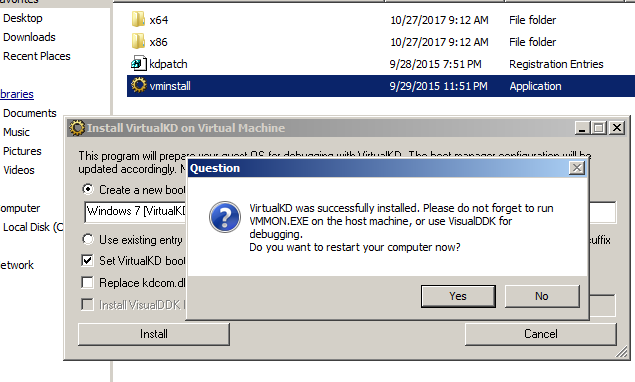
Ojo que si todo va bien va a quedar la maquina congelada al arrancar, pero eso es lo que debe pasar sino, está mal instalado esto, antes de darle YES arranquemos en la maquina principal la otra parte del virtualkd ejecutando con permisos de administrador el vmmon64.exe, luego que arranque, volvamos aquí y demosle YES.
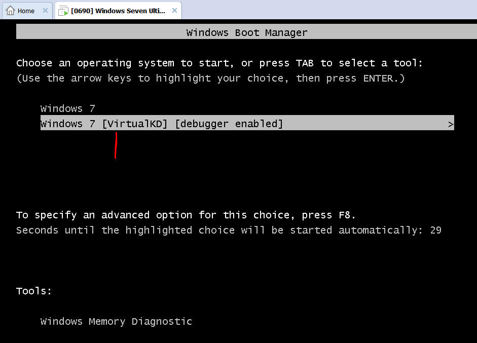
Ahí me va a dar la opción de arrancar normal o de arrancar debuggeando que es la que esta resaltada, si acepto y la maquina arranca normalmente no funciono, pero a veces no es necesario instalar todo de nuevo, cuando arranca le doy restart nuevamente y elijo lo mismo a ver si queda colgada como corresponde jeje.
Como la maquina me arranco normalmente sin restaurar nada
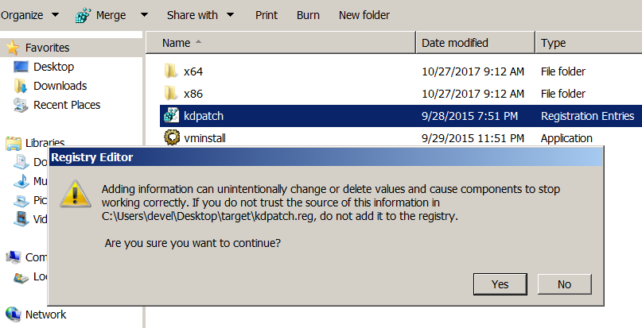
Intento ejecutar el reg ese y luego darle de nuevo al vminstall a ver si ahora va.
Al reiniciar arranca normalmente, en la maquina principal si en el vmmon64 no esta el YES debajo de OS significa que algo fallo.
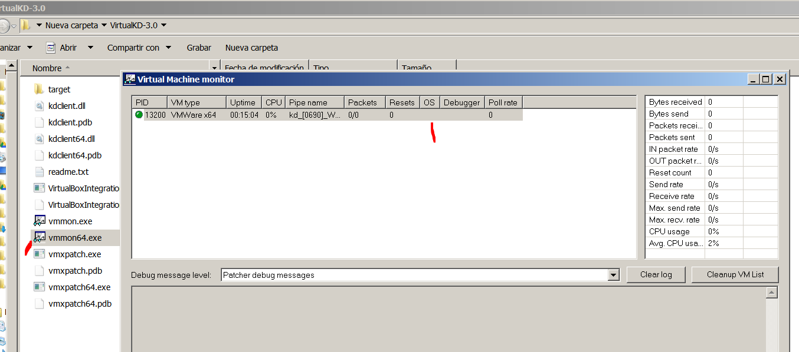
Bueno luego de algunos intentos y de reiniciar varias veces, creo que el truco es reiniciar del mismo target internamente y no desde el menú de vmware, si funciona debería pasar esto.
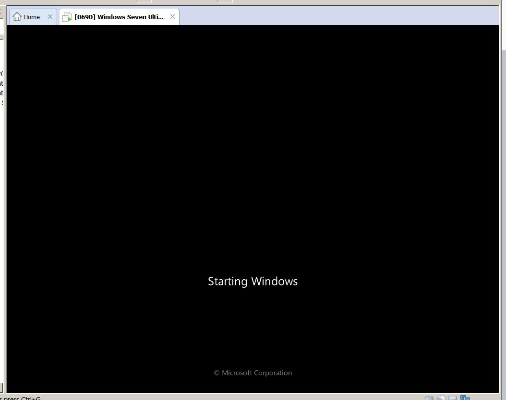
El target congelado ahí al inicio
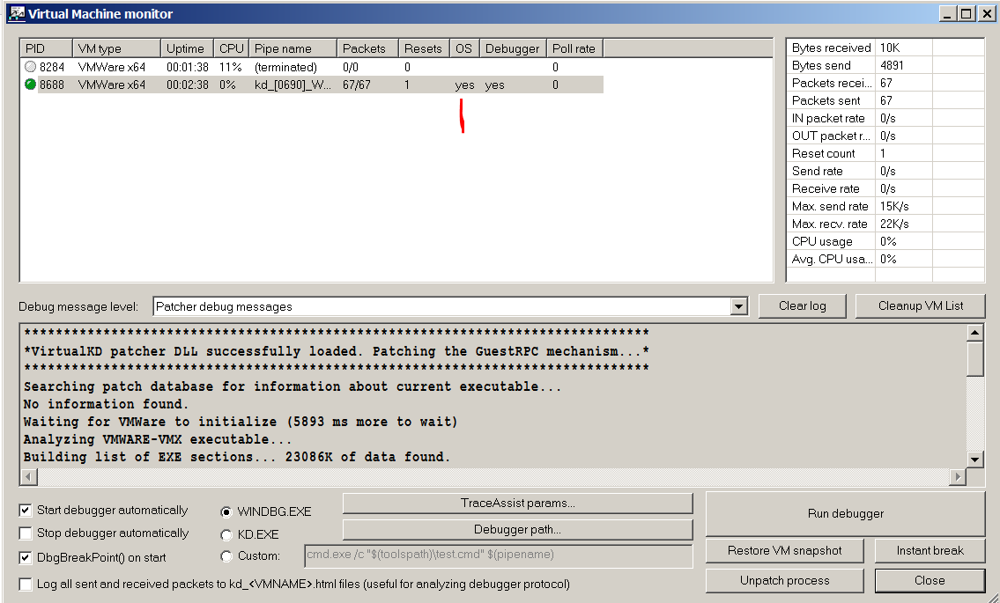
Allí debajo de OS debe decir YES y si esta puesta la tilde en START DEBUGGER AUTOMATICALLY debería arrancar el WINDBG sino en DEBUGGER PATH deberían buscar el windbg.exe para que quede configurado el path correcto al mismo asi lo arranca, sino lo hizo automáticamente y el path esta bien con RUN DEBUGGER lo hará, se conectara y quedara debuggeando el WINDBG a todo el sistema target.
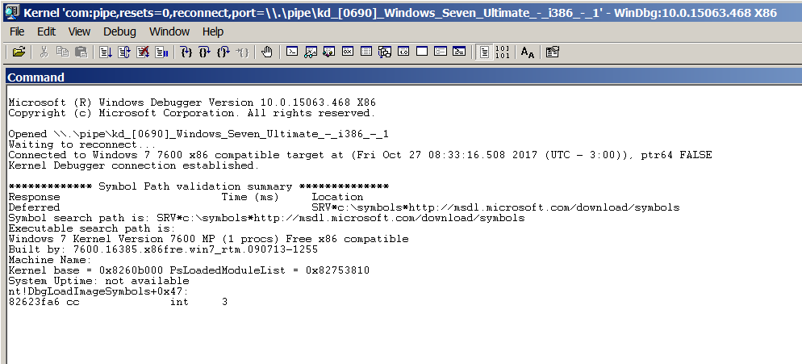
Tipeamos G y enter en el windbg y seguirá arrancando el sistema, una vez que me logueo en el target y ya arranco completamente voy al windbg y apreto break del menú DEBUG o ctrl mas break.
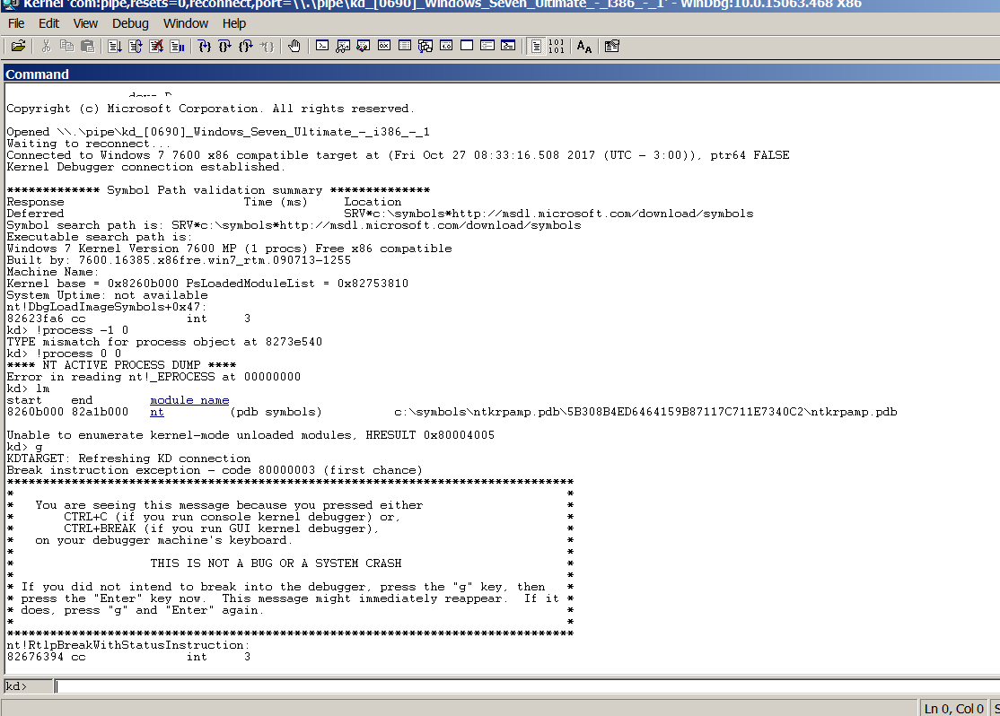
CONTEXTOS
Ahi veo ejecutando !process -1 0
kd> !process -1 0
PROCESS 83fc4a20 SessionId: none Cid: 0004 Peb: 00000000 ParentCid: 0000
DirBase: 00185000 ObjectTable: 87c01a88 HandleCount: 466.
Image: System
Que estoy en el proceso system veamos la lista de procesos con !process 0 0
kd> !process 0 0
**** NT ACTIVE PROCESS DUMP ****
PROCESS 83fc4a20 SessionId: none Cid: 0004 Peb: 00000000 ParentCid: 0000
DirBase: 00185000 ObjectTable: 87c01a88 HandleCount: 466.
Image: System
PROCESS 8502b3f8 SessionId: none Cid: 010c Peb: 7ffdd000 ParentCid: 0004
DirBase: 3ec2d020 ObjectTable: 88c1f178 HandleCount: 29.
Image: smss.exe
PROCESS 85771d40 SessionId: 0 Cid: 016c Peb: 7ffdf000 ParentCid: 0164
DirBase: 3ec2d060 ObjectTable: 96a4b590 HandleCount: 504.
Image: csrss.exe
PROCESS 856cd530 SessionId: 0 Cid: 0194 Peb: 7ffdf000 ParentCid: 0164
DirBase: 3ec2d0a0 ObjectTable: 96a4d5e0 HandleCount: 75.
Image: wininit.exe
PROCESS 856f6530 SessionId: 1 Cid: 019c Peb: 7ffdd000 ParentCid: 018c
DirBase: 3ec2d040 ObjectTable: 96a52b10 HandleCount: 179.
Image: csrss.exe
PROCESS 8573e530 SessionId: 1 Cid: 01d8 Peb: 7ffd6000 ParentCid: 018c
DirBase: 3ec2d0c0 ObjectTable: 96b9c620 HandleCount: 108.
Image: winlogon.exe
PROCESS 859ad030 SessionId: 0 Cid: 0208 Peb: 7ffdf000 ParentCid: 0194
DirBase: 3ec2d080 ObjectTable: 96a52ac8 HandleCount: 216.
Image: services.exe
PROCESS 84fbd9b0 SessionId: 0 Cid: 0218 Peb: 7ffdb000 ParentCid: 0194
DirBase: 3ec2d0e0 ObjectTable: 87cc3268 HandleCount: 556.
Image: lsass.exe
PROCESS 859c1030 SessionId: 0 Cid: 0220 Peb: 7ffdc000 ParentCid: 0194
DirBase: 3ec2d100 ObjectTable: 96b610d8 HandleCount: 141.
Image: lsm.exe
PROCESS 85a42708 SessionId: 0 Cid: 0278 Peb: 7ffdd000 ParentCid: 0208
DirBase: 3ec2d120 ObjectTable: 81f66f58 HandleCount: 352.
Image: svchost.exe
PROCESS 85a55030 SessionId: 0 Cid: 02b0 Peb: 7ffdf000 ParentCid: 0208
DirBase: 3ec2d140 ObjectTable: 81faf9d8 HandleCount: 53.
Image: vmacthlp.exe
PROCESS 85a69030 SessionId: 0 Cid: 02d8 Peb: 7ffdd000 ParentCid: 0208
DirBase: 3ec2d160 ObjectTable: 81f699c8 HandleCount: 267.
Image: svchost.exe
PROCESS 8596e928 SessionId: 0 Cid: 0350 Peb: 7ffd4000 ParentCid: 0208
DirBase: 3ec2d1a0 ObjectTable: 81f769d8 HandleCount: 412.
Image: svchost.exe
PROCESS 85abc030 SessionId: 0 Cid: 0378 Peb: 7ffdf000 ParentCid: 0208
DirBase: 3ec2d1c0 ObjectTable: 8a6a1e98 HandleCount: 397.
Image: svchost.exe
PROCESS 85ac2030 SessionId: 0 Cid: 0394 Peb: 7ffd9000 ParentCid: 0208
DirBase: 3ec2d1e0 ObjectTable: 8a6ab3b0 HandleCount: 1027.
Image: svchost.exe
PROCESS 85b234b8 SessionId: 0 Cid: 0434 Peb: 7ffd6000 ParentCid: 0208
DirBase: 3ec2d200 ObjectTable: 8a6d6a08 HandleCount: 536.
Image: svchost.exe
PROCESS 85b5ec88 SessionId: 0 Cid: 0484 Peb: 7ffda000 ParentCid: 0208
DirBase: 3ec2d220 ObjectTable: 8a73fb70 HandleCount: 376.
Image: svchost.exe
PROCESS 85710148 SessionId: 0 Cid: 04f0 Peb: 7ffd8000 ParentCid: 0208
DirBase: 3ec2d240 ObjectTable: 81fac1b8 HandleCount: 335.
Image: spoolsv.exe
PROCESS 8571e030 SessionId: 0 Cid: 0514 Peb: 7ffdf000 ParentCid: 0208
DirBase: 3ec2d260 ObjectTable: 91405ec8 HandleCount: 334.
Image: svchost.exe
PROCESS 85c02900 SessionId: 0 Cid: 05b0 Peb: 7ffdd000 ParentCid: 0208
DirBase: 3ec2d280 ObjectTable: 93cf2628 HandleCount: 83.
Image: VGAuthService.exe
PROCESS 85c12bb8 SessionId: 0 Cid: 05dc Peb: 7ffdf000 ParentCid: 0208
DirBase: 3ec2d2a0 ObjectTable: 81ef5558 HandleCount: 291.
Image: vmtoolsd.exe
PROCESS 85c4d610 SessionId: 0 Cid: 06d0 Peb: 7ffdf000 ParentCid: 0208
DirBase: 3ec2d2c0 ObjectTable: 9168ae58 HandleCount: 101.
Image: svchost.exe
PROCESS 85761d40 SessionId: 0 Cid: 076c Peb: 7ffdf000 ParentCid: 0208
DirBase: 3ec2d2e0 ObjectTable: 8a6a59f8 HandleCount: 192.
Image: dllhost.exe
PROCESS 85cc7c48 SessionId: 0 Cid: 0790 Peb: 7ffd8000 ParentCid: 0278
DirBase: 3ec2d300 ObjectTable: 8a78a190 HandleCount: 191.
Image: WmiPrvSE.exe
PROCESS 85cdc658 SessionId: 0 Cid: 07d8 Peb: 7ffd5000 ParentCid: 0208
DirBase: 3ec2d340 ObjectTable: 916705d8 HandleCount: 191.
Image: dllhost.exe
PROCESS 85d3fa30 SessionId: 0 Cid: 0190 Peb: 7ffdf000 ParentCid: 0208
DirBase: 3ec2d320 ObjectTable: 9175c2c8 HandleCount: 152.
Image: msdtc.exe
PROCESS 85075cb0 SessionId: 0 Cid: 0528 Peb: 7ffdc000 ParentCid: 0208
DirBase: 3ec2d360 ObjectTable: 916c0a70 HandleCount: 110.
Image: VSSVC.exe
PROCESS 84e9b030 SessionId: 0 Cid: 0784 Peb: 7ffd4000 ParentCid: 0278
DirBase: 3ec2d380 ObjectTable: 917d4938 HandleCount: 318.
Image: WmiPrvSE.exe
PROCESS 8570d538 SessionId: 1 Cid: 0858 Peb: 7ffdc000 ParentCid: 0208
DirBase: 3ec2d3e0 ObjectTable: 96b75ba0 HandleCount: 156.
Image: taskhost.exe
PROCESS 85e58030 SessionId: 0 Cid: 08f4 Peb: 7ffdc000 ParentCid: 0208
DirBase: 3ec2d440 ObjectTable: 91d3ddd8 HandleCount: 166.
Image: sppsvc.exe
PROCESS 85af2b08 SessionId: 1 Cid: 0974 Peb: 7ffdc000 ParentCid: 0378
DirBase: 3ec2d180 ObjectTable: 9175b340 HandleCount: 68.
Image: dwm.exe
PROCESS 85e626f0 SessionId: 1 Cid: 0980 Peb: 7ffdb000 ParentCid: 096c
DirBase: 3ec2d460 ObjectTable: 81ef1540 HandleCount: 600.
Image: explorer.exe
PROCESS 85ea28f8 SessionId: 1 Cid: 09e0 Peb: 7ffd5000 ParentCid: 0980
DirBase: 3ec2d420 ObjectTable: 9482bc18 HandleCount: 33.
Image: jusched.exe
PROCESS 85ea9030 SessionId: 1 Cid: 09e8 Peb: 7ffd5000 ParentCid: 0980
DirBase: 3ec2d400 ObjectTable: 94823c00 HandleCount: 225.
Image: vmtoolsd.exe
PROCESS 84061298 SessionId: 0 Cid: 0a88 Peb: 7ffdf000 ParentCid: 0208
DirBase: 3ec2d4a0 ObjectTable: 91f99d78 HandleCount: 630.
Image: SearchIndexer.exe
PROCESS 840685a0 SessionId: 0 Cid: 0aec Peb: 7ffd6000 ParentCid: 0a88
DirBase: 3ec2d480 ObjectTable: 91f65210 HandleCount: 312.
Image: SearchProtocolHost.exe
PROCESS 840758b8 SessionId: 0 Cid: 0b00 Peb: 7ffd5000 ParentCid: 0a88
DirBase: 3ec2d4c0 ObjectTable: 949d8b40 HandleCount: 78.
Image: SearchFilterHost.exe
PROCESS 84ea7030 SessionId: 0 Cid: 0c14 Peb: 7ffdb000 ParentCid: 0208
DirBase: 3ec2d3c0 ObjectTable: 954c8948 HandleCount: 312.
Image: svchost.exe
PROCESS 840d3d40 SessionId: 0 Cid: 0e00 Peb: 7ffdf000 ParentCid: 0208
DirBase: 3ec2d3a0 ObjectTable: 94822518 HandleCount: 117.
Image: WmiApSrv.exe
Esa es la lista de procesos si quisiera switchear al contexto de otro proceso para poner breakpoints allí haría.(por ejemplo switchear al explorer que tiene en mi caso 85e626f0 justo al lado de la palabra PROCESS)
kd> .process /i 85e626f0
You need to continue execution (press 'g' <enter>) for the context
to be switched. When the debugger breaks in again, you will be in
the new process context.
SWITCHEANDO.
Apreto G y se switchea el contexto
kd> g
Break instruction exception - code 80000003 (first chance)
nt!RtlpBreakWithStatusInstruction:
82676394 cc
Veo en que proceso estoy ahora
kd> !process -1 0
PROCESS 85e626f0 SessionId: 1 Cid: 0980 Peb: 7ffdb000 ParentCid: 096c
DirBase: 3ec2d460 ObjectTable: 81ef1540 HandleCount: 600.
Image: explorer.exe
Si no tienen ganas de perder tiempo pueden saltear el relodeo de símbolos en este momento, ya que solo es para practicar y tarda bastante, si quieren seguir adelante sigan en la pagina siguiente, donde termina la zona punteada.
RELOAD
Relodeo los símbolos con .reload /f
Va a tardar un rato largo, algunos los podrá bajar porque están en el repositorio otros no tendrán símbolos, pero la carpeta de símbolos se debería ir llenando.
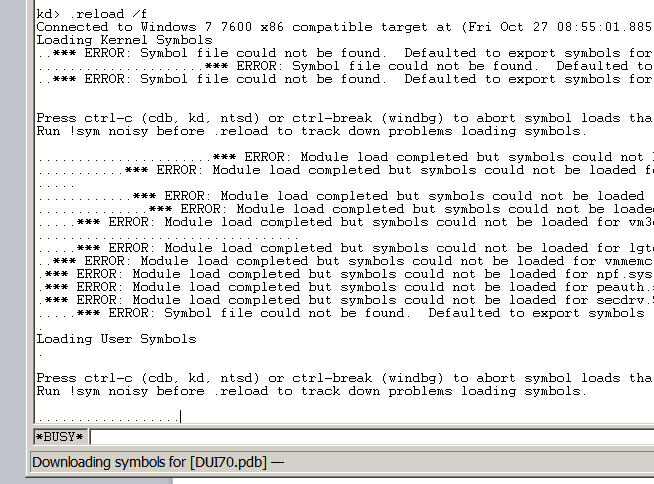
Allí vemos al windbg BUSY y bajando símbolos (downloading) la primera vez que lo hagamos tardara mucho porque no tiene ningún símbolo, las subsiguientes no se hagan problema, tardara mas jejeje.
Si no les carga símbolos pueden usar !sym noisy antes de reload.
Run !sym noisy before .reload to track down problems loading symbols.
---------------------------------------------------------------------------------
Muchos dirán si es un curso de IDA porque no nos atacheamos directamente al inicio con IDA con el plugin windbg, lo cual es perfectamente posible.
El tema es que a windbg lo uso para llegar hasta el punto mismo de donde quiero debuggear y recién ahí me atacheo con IDA porque a veces IDA falla y se cuelga todo, por lo tanto es mejor usarlo cerca del punto de interés a debuggear y dejarlo al WINDBG en la parte no importante que es mas robusto en este tipo de debugging remoto de kernel, de cualquier forma en cualquier momento yo podría breakear, cerrar el windbg y el sistema target quedarla congelado y luego atachear el IDA con el plugin windbg y continuar debuggeando con el sin problemas por eso, lo hare mas adelante.
Si hicieron reload con lm veran los modulos y sus simbolos
kd> lm
start end module name
00550000 007d0000 Explorer (pdb symbols) c:\symbols\explorer.pdb\A289F16DBCB94B618103DE843592AB182\explorer.pdb 6bd50000 6bda2000 zipfldr (pdb symbols) c:\symbols\zipfldr.pdb\0CFC61030167490C9ABF25C441E651D11\zipfldr.pdb 6bdb0000 6bddb000 provsvc (pdb symbols) c:\symbols\provsvc.pdb\222401C8EF0749BA9E532D6AA6666F601\provsvc.pdb 6bde0000 6be2f000 hgcpl (pdb symbols) c:\symbols\hgcpl.pdb\4EA31C513A1C47F78EAAC3A5CD54D59A1\hgcpl.pdb 6be90000 6bf73000 FXSRESM (no symbols) 6bf80000 6bfe4000 imapi2 (pdb symbols) c:\symbols\imapi2.pdb\4F52351C2B514C3699D1B47D48BCFA322\imapi2.pdb 6bff0000 6c02a000 FXSAPI (pdb symbols) c:\symbols\FXSAPI.pdb\C5C8AC671FA34D9EB1CDD55364F6E39E2\FXSAPI.pdb 6c030000 6c102000 fxsst (pdb symbols) c:\symbols\FXSST.pdb\DDFADEC7308347E9AD60E0617335C84D2\FXSST.pdb 6c110000 6c31e000 SyncCenter (pdb symbols) c:\symbols\SyncCenter.pdb\23C05D457D6F4BA8AAB78F8293F398C92\SyncCenter.pdb 6c320000 6cd9c000 ieframe (pdb symbols) c:\symbols\ieframe.pdb\BAAAEB87C2F8485C80589CCF7E3A82BE2\ieframe.pdb 6cda0000 6ce50000 bthprops (pdb symbols) c:\symbols\bthprops.pdb\97B2FBEB35D64296B802DD2387D5E1CF1\bthprops.pdb 6ce50000 6ce98000 wwanapi (pdb symbols) c:\symbols\wwanapi.pdb\9862E0172237487BBFEF6C1B3EBEE58A1\wwanapi.pdb 6cf70000 6d02a000 Actioncenter (pdb symbols) c:\symbols\ActionCenter.pdb\98A49FC8D39C471996BEB3EF01EAA4831\ActionCenter.pdb 6d340000 6d4ee000 pnidui (pdb symbols) c:\symbols\pnidui.pdb\50126007BD354C589514BA7F546EA17A2\pnidui.pdb 6d4f0000 6d755000 netshell (pdb symbols) c:\symbols\netshell.pdb\083CF46E903F426AA06FF633605370E32\netshell.pdb 6d8c0000 6d8ee000 QAgent (pdb symbols) c:\symbols\qagent.pdb\ABAFFF300B6A48789369D4A90AD2DC222\qagent.pdb 6da60000 6da76000 Wlanapi (pdb symbols) c:\symbols\wlanapi.pdb\48EE3C9420F24448833370695E2AF4772\wlanapi.pdb 6df90000 6df9a000 wwapi (pdb symbols) c:\symbols\wwapi.pdb\84C82A03729E48E0A883E55B56B7A0161\wwapi.pdb 6e1e0000 6e1eb000 CSCAPI (pdb symbols) c:\symbols\cscapi.pdb\3D7C1EEDC26B43C6B4CFD2BBF8EE08CB2\cscapi.pdb
Ven que los que tienen símbolos los guardo en mi carpeta symbols, eso significa que todo esta bien configurado sino a llorar a bill gates jeje.
Hare un driver simple de prueba tipo HOLA MUNDO en la maquina principal, el que no lo quiere compilar estará compilado junto con el tute.
En una carpeta que no tenga espacios ni en el nombre ni en el path hago un archivo de texto y le coloco dentro el código.
#include <ntddk.h>
void DriverUnload(
PDRIVER_OBJECT pDriverObject)
{
DbgPrint("Driver unloading\n");
}
NTSTATUS DriverEntry(
PDRIVER_OBJECT DriverObject,
PUNICODE_STRING RegistryPath)
{
DriverObject->DriverUnload = DriverUnload;
DbgPrint("Hello, World\n");
return STATUS_SUCCESS;
}
Lo renombro como HelloWorldDriver.c luego hago uno que se llame solo SOURCES con esto dentro
TARGETNAME = HelloWorldDriver
TARGETPATH = obj
TARGETTYPE = DRIVER
INCLUDES = %BUILD%\inc
LIBS = %BUILD%\lib
SOURCES = HelloWorldDriver.c
Y otro que se llame makefile.def con esto dentro
!INCLUDE $(NTMAKEENV)\makefile.def
Para compilarlo si instale el wdk 7.1 voy a la barra de programas instalados del inicio de windows en la maquina principal.
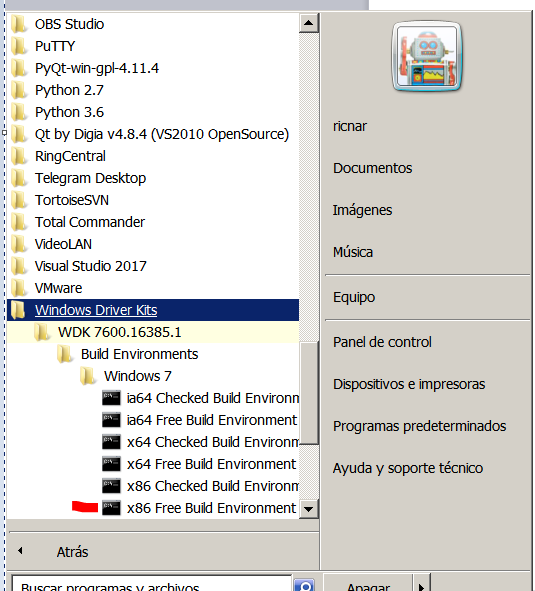
Y arranco el x86 FREE BUILD ENVIRONMENT de Windows 7.
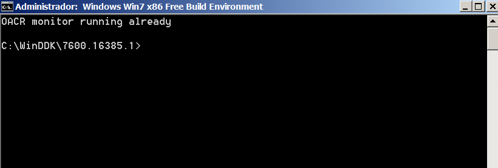
Allí cambio al path sin espacios donde están los 3 archivos.
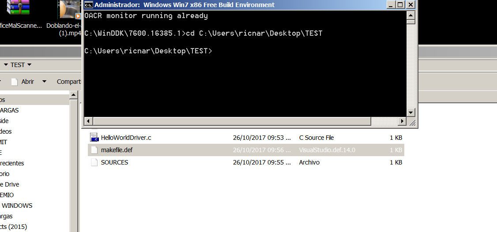
Ejecuto el comando build
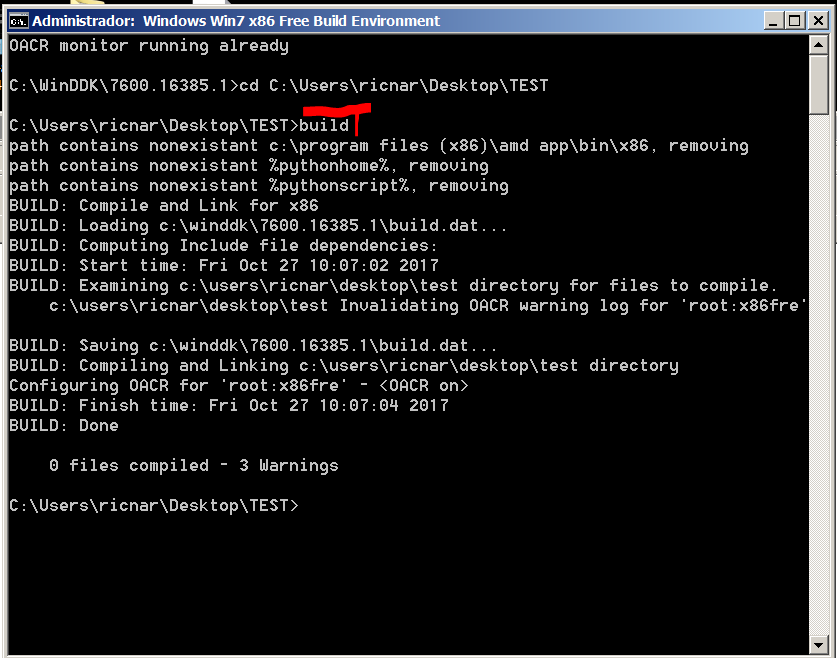
Allí se compilo
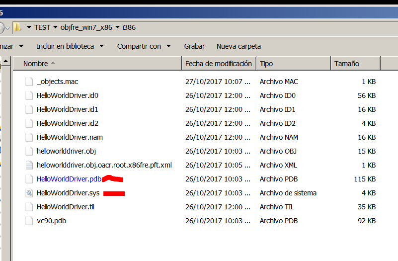
Para ver si funciona copio el sys a la maquina target (si este detenido en el Windbg apreto g y enter para que siga corriendo) y en la misma arranco el OSRLOADER con permiso de administrador, la versión de XP va bien en Windows 7.
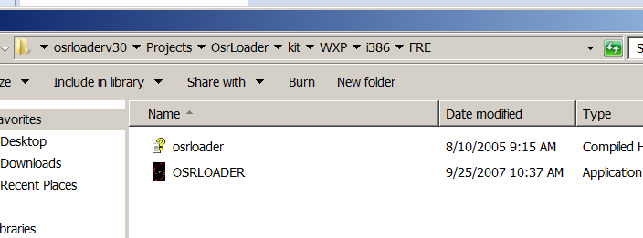
HELLOWORLDDRIVER
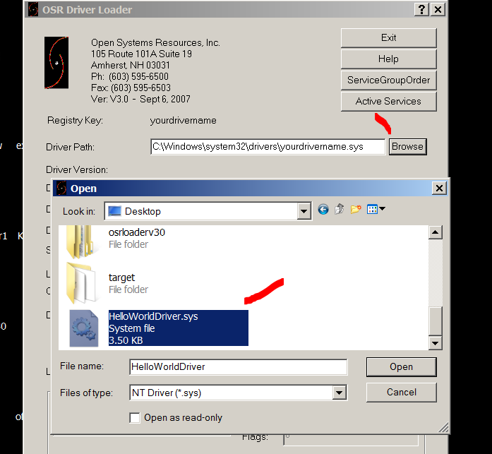
Busco el driver, y lo abro.
Apreto REGISTER SERVICE
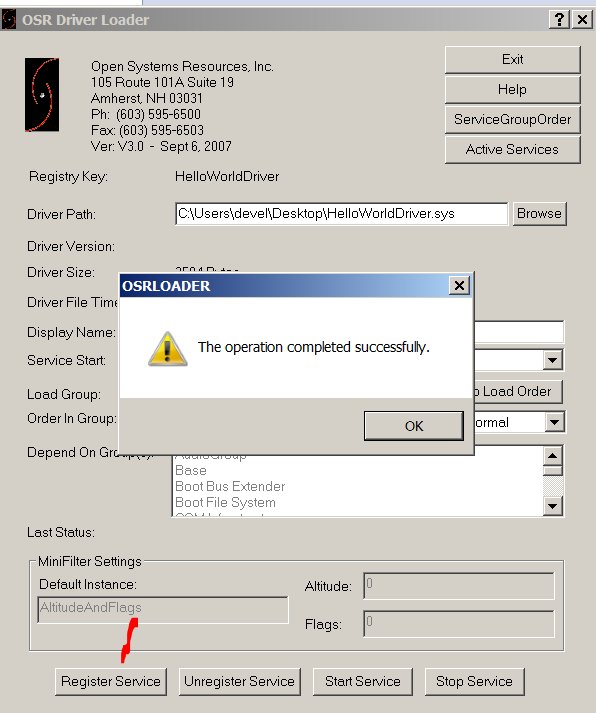
Luego START SERVICE y si no da un BSOD y sale el mismo cartel esta todo bien, para ver lo que imprime tenemos que usar el DEBUG VIEW como administrador.
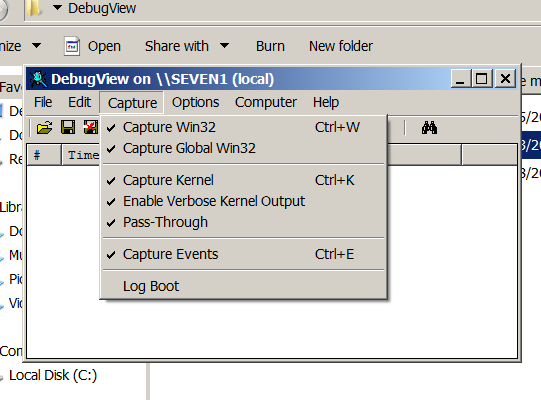
Y cuando arranco y paro el driver
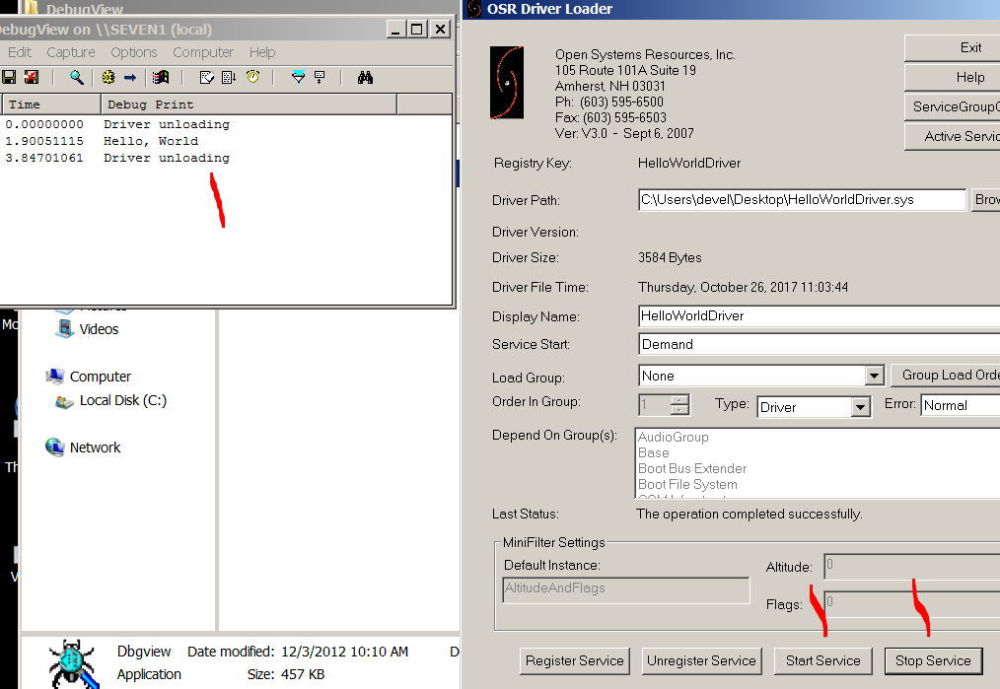
Se ve cuando muestra la salida del driver que obviamente no puede hacerlo por consola.
En el WINDBG también se ve
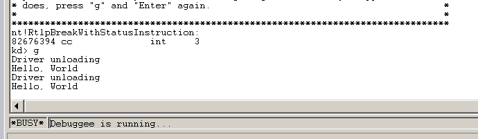
Si apreto START SERVICE y lo dejo encendido y breakeo en el windbg.
kd> !process -1 0
PROCESS 83fc4a20 SessionId: none Cid: 0004 Peb: 00000000 ParentCid: 0000
DirBase: 00185000 ObjectTable: 87c01a88 HandleCount: 475.
Image: System
Veo todos los procesos con !process 0 0 y dentro de la lista esta.
PROCESS 840dd830 SessionId: 1 Cid: 0b28 Peb: 7ffd5000 ParentCid: 0980
DirBase: 3ec2d4c0 ObjectTable: 95585948 HandleCount: 253.
Image: OSRLOADER.exe
Switcheo el context al mismo con
kd> .process /i 840dd830
You need to continue execution (press 'g' <enter>) for the context
to be switched. When the debugger breaks in again, you will be in
the new process context.
Apreto g y enter
Ya switcheo
kd> g
Break instruction exception - code 80000003 (first chance)
nt!RtlpBreakWithStatusInstruction:
82676394 cc int 3
kd> !process -1 0
PROCESS 840dd830 SessionId: 1 Cid: 0b28 Peb: 7ffd5000 ParentCid: 0980
DirBase: 3ec2d4c0 ObjectTable: 95585948 HandleCount: 253.
Image: OSRLOADER.exe
Vemos si hacemos lm que no tenemos simbolos de nuestro driver
91109000 9110f000 HelloWorldDriver (deferred)
Como tenemos el pdb podemos forzarlo a que cargue los símbolos jeje
Vemos que en la carpeta simbols hay una carpeta con el nombre y punto pdb
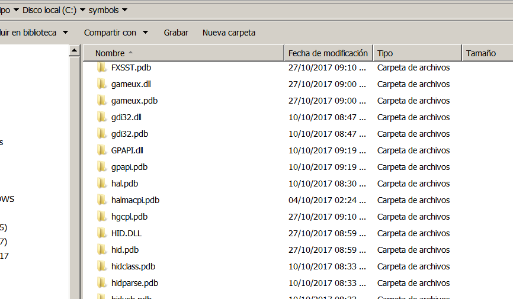
Agregamos una carpeta llamada HelloWorldDriver.pdb
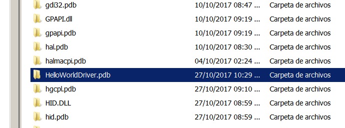
El problema es que dentro de las otras carpetas hay una subcarpeta con un numero largo diferente en cada caso ¿cómo obtenemos eso? jeje.
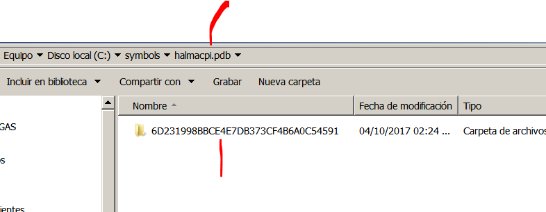
Una vez que ya creamos la carpeta HelloWorldDriver.pdb vamos al windbg y tipeamos.
!sym noisy
.reload /f HelloWorldDriver.sys
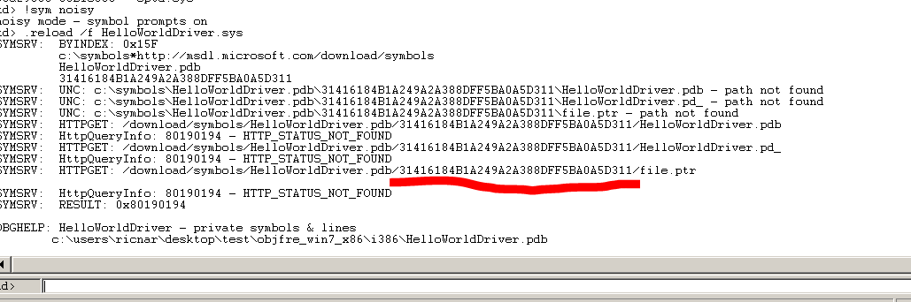
Ahí nos dice el nombre de la carpeta que no encuentra, la creamos copiamos el pdb allí y luego
.reload /f HelloWorldDriver.sys
Luego con lm ya quedara en mi caso la hallo en la misma carpeta TEST que lo compile
91109000 9110f000 HelloWorldDriver (private pdb symbols) c:\users\ricnar\desktop\test\objfre_win7_x86\i386\HelloWorldDriver.pdb
La cuestion es que los tiene ahora podemos ver que simbolos tiene con el comando x.
kd> x HelloWorldDriver!*
9110c004 HelloWorldDriver!__security_cookie_complement = 0x6eeffa5e 9110b000 HelloWorldDriver!KeTickCount = struct _KSYSTEM_TIME 9110c000 HelloWorldDriver!__security_cookie = 0x911005a1 9110d03e HelloWorldDriver!GsDriverEntry (struct _DRIVER_OBJECT *, struct _UNICODE_STRING *) 9110a006 HelloWorldDriver!DriverUnload (struct _DRIVER_OBJECT *) 9110d005 HelloWorldDriver!__security_init_cookie (void) 9110a01a HelloWorldDriver!DriverEntry (struct _DRIVER_OBJECT *, struct _UNICODE_STRING *) 9110a058 HelloWorldDriver! ?? ::FNODOBFM::`string' (<no parameter info>) 9110a046 HelloWorldDriver! ?? ::FNODOBFM::`string' (<no parameter info>) 9110d050 HelloWorldDriver!_IMPORT_DESCRIPTOR_ntoskrnl = <no type information> 9110a040 HelloWorldDriver!DbgPrint (<no parameter info>) 9110b004 HelloWorldDriver!_imp__DbgPrint = <no type information> 9110b008 HelloWorldDriver!ntoskrnl_NULL_THUNK_DATA = <no type information> 9110d064 HelloWorldDriver!_NULL_IMPORT_DESCRIPTOR = <no type information>
Allí están las direcciones y los símbolos si quisiéramos poner un breakpoint en el windbg conviene estando en el contexto del proceso tipear.
bp /p @$proc HelloWorldDriver!DbgPrint
En vez de bp HelloWorldDriver!DriverUnload, quizás en este caso no es tan importante, pero si es un breakpoint en una función de sistema parara miles de veces cuando cada proceso la use, mientras que usando el bp contextual solo para cuando la usa el proceso actual.
Veamos si funciona
kd> bp /p @$proc HelloWorldDriver!DbgPrint
Ahora corramos con g y enter y detengamos el driver como no para, pensamos que no es llamado por el mismo proceso asi que vuelvo a switchear al contexto del mismo proceso y luego.
kd> ba e1 HelloWorldDriver!DbgPrint
kd> g
Breakpoint 2 hit
HelloWorldDriver!DbgPrint:
9111c040 ff2504d01191 jmp dword ptr [HelloWorldDriver!_imp__DbgPrint (9111d004)]
kd> !process -1 0
PROCESS 83fc4a20 SessionId: none Cid: 0004 Peb: 00000000 ParentCid: 0000
DirBase: 00185000 ObjectTable: 87c01a88 HandleCount: 476.
Image: System
Ahí paro y veo que es el sistema que llama a imprimir, en ese caso cuando no se bien cual es el proceso que llama se puede poner ba e1 o bp si es que no para muchas veces como en este caso.
USANDO IDA PARA DEBUGGEAR KERNEL.
Bueno ahora seguiremos con el IDA, para ello abrimos en el IDA 6.8 el HelloWorldDriver.sys y si esta el pdb en la misma carpeta lo cargara sino cuando lo pide lo buscamos y que lo cargue.
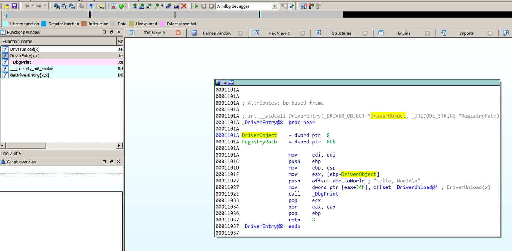
En el IDA vamos a DEBUGGER-SWITCH DEBUGGER y elegimos el windbg.
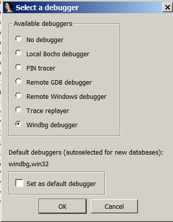
Luego en DEBUGGER-DEBUGGER OPTIONS-SET SPECIFIC OPTIONS elegimos Kernel mode debugging.
Y despues en PROCESS OPTIONS.
En Connection string armamos con el nombre la string de conexión.
com:port=\\.\pipe\kd_[0690]_Windows_Seven_Ultimate_-_i386_-_1,pipe
Sacamos el nombre del virtualkd.
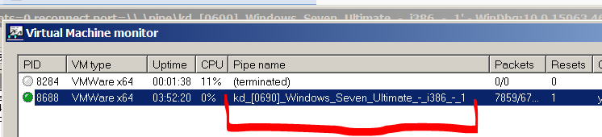
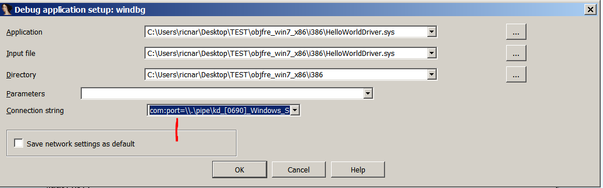
Listo aceptamos.
Nos fijamos que el windbg este breakeado y si no lo breakeamos y lo cerramos
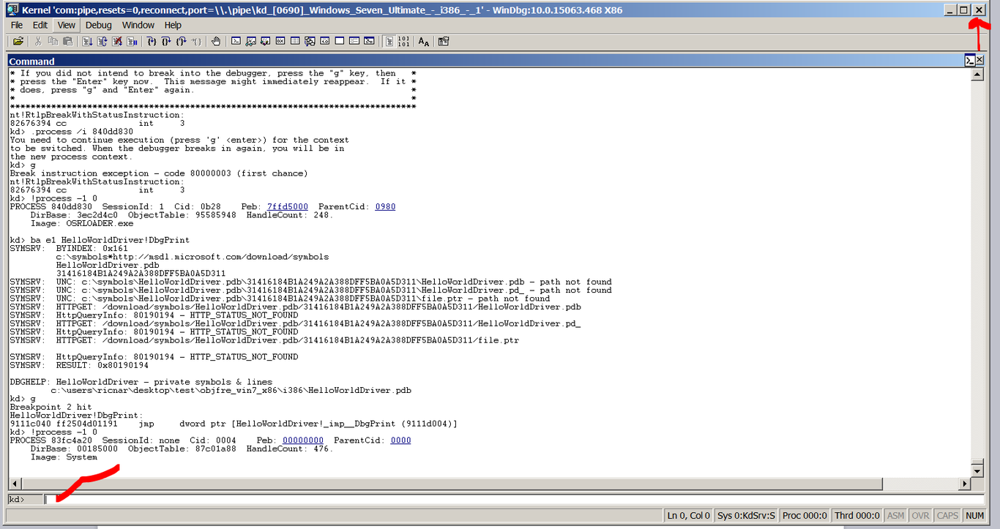
En IDA debugger-attach to process
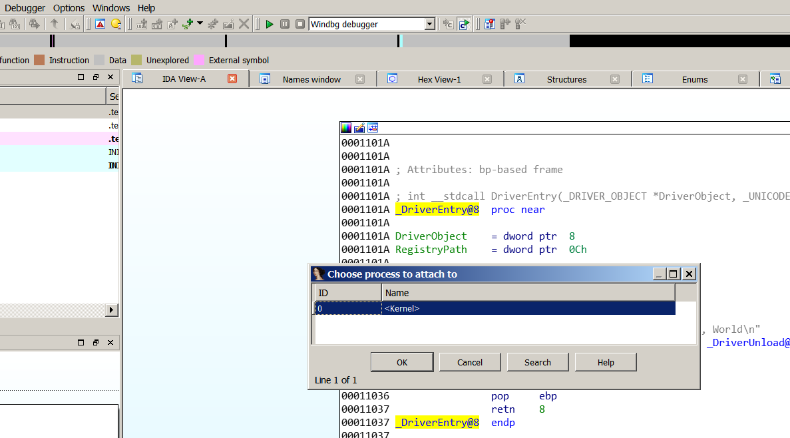
Debe salir KERNEL y aceptamos si no sale eso hicimos mal algunos de los pasos anteriores o la maquina no se puede conectar por algún error.
Si el idb en IDA tiene el mismo nombre o sea no lo cambiamos y sigue llamándose HelloWorldDriver.idb deberia detectar que está cargando un módulo similar, le ponemos que si que es el mismo apretando SAME con lo cual rebaseara la info que tenía y la acomodara a las nuevas direcciones actuales.
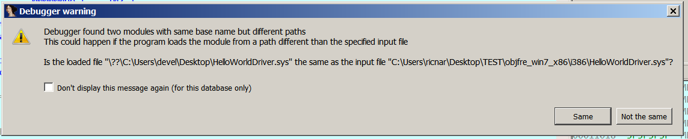
Una vez que cargue estaremos debuggeando, por ahí abajo estará la barra de windbg donde podríamos tipear comandos de Windbg.
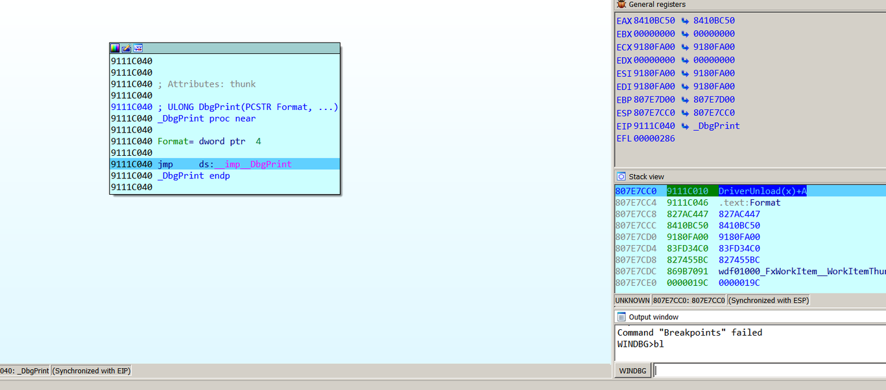
Puedo poner breakpoints en el IDA también
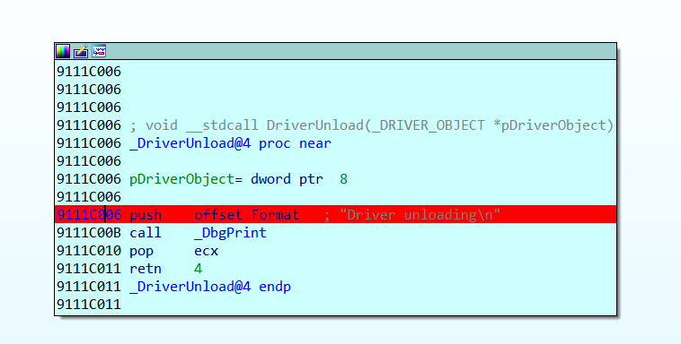
Y acá lo que no funciona es dar run con el comando g de windbg, debo dar el RUN de IDA o F9.
Vemos que la imagen en el target vuelve a funcionar y se descongela, podemos arrancar y parar el driver como antes, para que se detenga en el breakpoint.
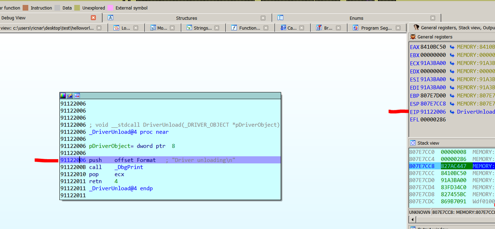
Ahí vemos que funciona perfectamente.
En la otra máquina que tengo el Visual Studio 2015 con el wdk 10
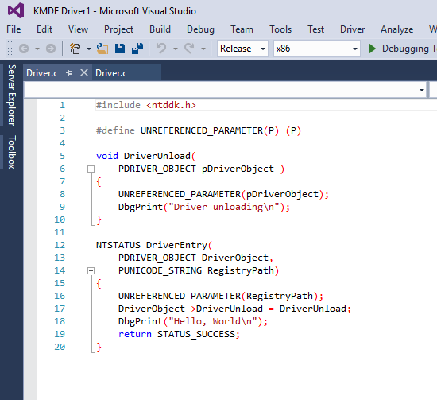
Si lo compilo para que no de error, debería bajar el nivel de exigencia o modificarlo asi.
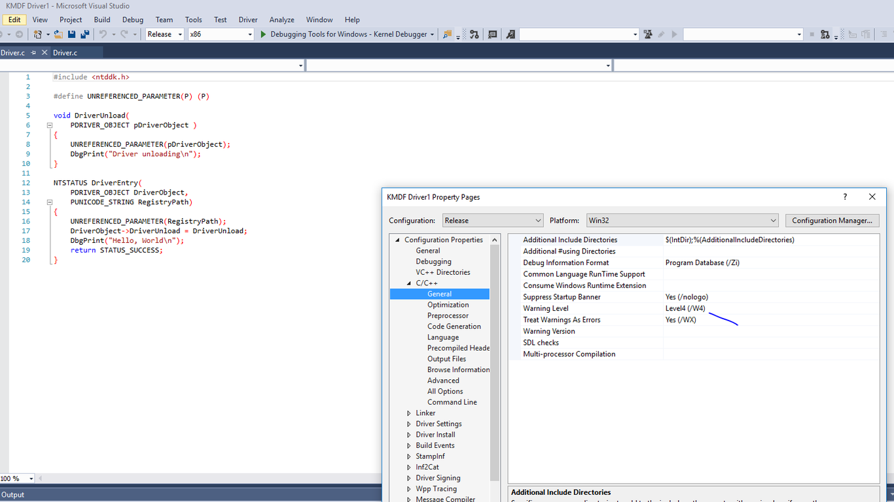
También en driver settings cambiar que es para Windows 7
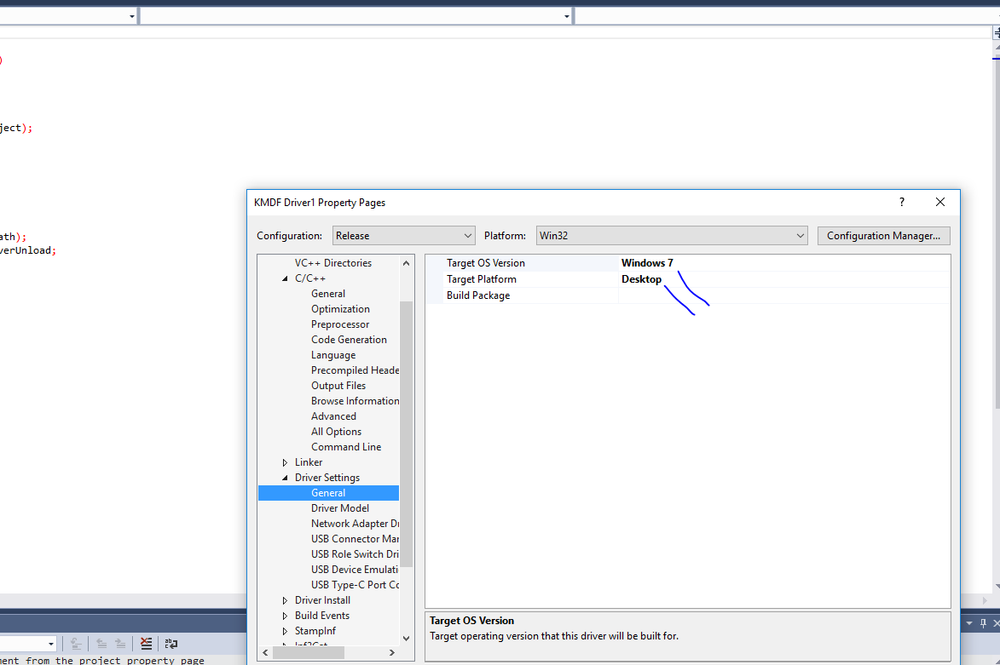
Y al compilar no da error
1>------ Rebuild All started: Project: KMDF Driver1, Configuration: Release Win32 ------
1> Building 'KMDF Driver1' with toolset 'WindowsKernelModeDriver10.0' and the 'Desktop' target platform.
1> Stamping Release\KMDFDriver1.inf [Version] section with DriverVer=10/27/2017,12.49.58.404
1> Driver.c
1> KMDF Driver1.vcxproj -> c:\Users\rnarvaja\Documents\Visual Studio 2015\Projects\KMDF Driver1\Release\KMDFDriver1.sys
1> KMDF Driver1.vcxproj -> c:\Users\rnarvaja\Documents\Visual Studio 2015\Projects\KMDF Driver1\Release\KMDFDriver1.pdb (Full PDB)
1> Done Adding Additional Store
1> Successfully signed: c:\Users\rnarvaja\Documents\Visual Studio 2015\Projects\KMDF Driver1\Release\KMDFDriver1.sys
1>
1> .........................
1> Signability test complete.
1>
1> Errors:
1> None
1>
1> Warnings:
1> None
1>
1> Catalog generation complete.
1> c:\Users\rnarvaja\Documents\Visual Studio 2015\Projects\KMDF Driver1\Release\KMDF Driver1\kmdfdriver1.cat
1> Done Adding Additional Store
1> Successfully signed: c:\Users\rnarvaja\Documents\Visual Studio 2015\Projects\KMDF Driver1\Release\KMDF Driver1\kmdfdriver1.cat
1>
========== Rebuild All: 1 succeeded, 0 failed, 0 skipped ==========
Si quito el Breakpoint y corro desde el IDA para descongelar el target.
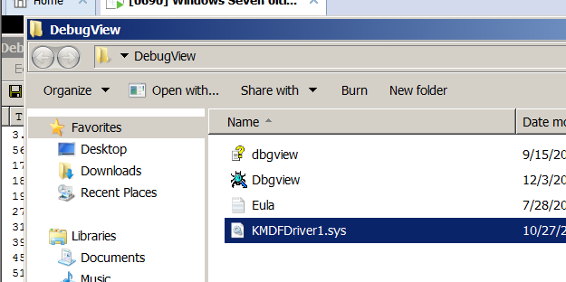
Copio el driver en el target
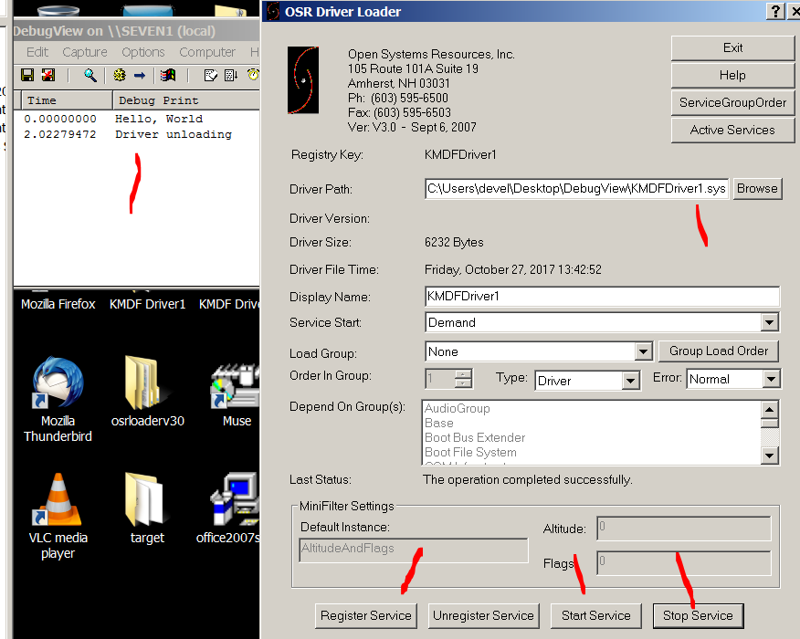
Lo busco lo registro y lo arranco y paro, en el debugview vemos los mensajes, aunque obviamente no parara en IDA porque es otro driver, pero puedo ir a IDA suspender el proceso y ir a DEBUGGER DETACH FROM PROCESS y podríamos volver a atachear el Windbg desde el RUN DEBUGGER del vmmon o si no abrir el nuevo sys en ida con su pdb.
Vemos que es un poco mas complejo que el anterior.
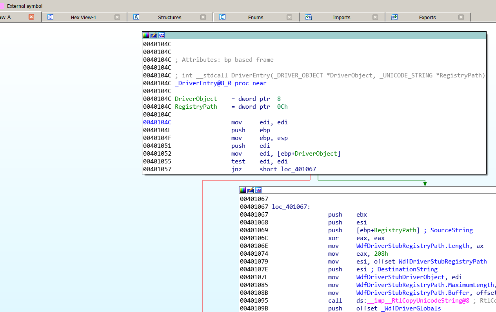
Volvemos a configurar IDA cambiando el debugger a windbg, poniéndolo en modo kernel y usando la misma connection string.
Al darle a start en el target me aparece el cartel
Le digo que es el mismo, apreto SAME.
Buscando entre las funciones veo el _DriverEntry y luego llama aquí.
Asi que le pongo un breakpoint y doy run, luego cargo y descargo el driver y me sale el cartel de si es el mismo le digo que si.
Y para en el breakpoint como ante, con esta otra versión del driver.
Esto fue un inicio para poder ver y configurar el sistema para debuggear kernel, posiblemente los próximos tutes sean videotutes sobre el tema, veremos, si hace falta alguno mas teórico antes.
Hasta la siguiente parte.
Ricardo Narvaja